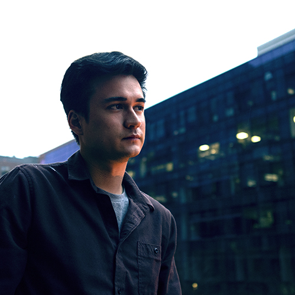

Team
-
Chelsie Pennello - Director / Writer / ProducerChelsie is a Chinese-American filmmaker based in Washington, DC. As a writer/director, her work often explores the untold Asian American experience and complex, flawed female protagonists. Her previous short film that she made as a student at Syracuse University, KILL GREEN, premiered at the Seattle Asian American Film Festival in 2018 and won the “One to Watch” Award at the 41st Asian American International Film Festival in NYC. With a few years of corporate video producing under her belt and a lot of time spent watching and writing films, she is excited to take the leap into crafting bigger and bolder visions.

-
Nathan Colby - Director of PhotographyBy day, Nathan is a DC-based commercial director at January Third; a small but mighty creative agency that focuses on making memorable content for brands across the world. By night, Nathan is a narrative director and cinematographer that focuses on telling stories that are usually a little insane, WAY too ambitious, and always grounded in something personal. He values fostering strong creative partnerships and thrives off of keeping a positive energy on set. Fun fact: if a picture is worth a thousand words, then the average film is approximately worth 133,920,000 words which probably means I should've paid more attention in school.
-
Sammy Yoon - Director of PhotographySammy Yoon wasn't born behind a camera but he definitely feels at home behind one. He exudes calm and always maintains absolute determination when crafting an image with light and lenses. Sammy is a novelist who writes with the record button. He's drawn to projects that have bold direction and endless visual potential. He believes collaboration > ego boosting. With experience in freelance, agency, and automotive video producing, he's taken projects from the inkling of a shower thought to finished edit ready to be published.
-
Tina Xia - Executive ProducerTina is an illustrator, sustainable fashion designer, and nonprofit administrator with expertise in social media marketing strategy and management. Her illustrations and clothing designs draw inspiration from east-asian pop culture with a diaspora twist, often blending eastern and western concepts and styles. In her nonprofit work, she focuses on issues such as women’s empowerment and mental health awareness. By drawing from her breadth of creative skills and social entrepreneurship experience, she is able to envision the big picture, make connections, and contribute unique insights from a variety of perspectives.

-
Jeremie Davis - ProducerWhether it's obsessing over the character arcs in her favorite shows or writing comedy sketches based on her awkward everyday experiences, Jeremie Cander is a Screenwriter and Director. Based in the Washington, DC area, Jeremie spends her 9-5 as an Associate Producer at a creative agency but when the clock strikes at 5, she is actively earning her certificate in Television and Screenwriting from New York University (NYU). Working at the 2021 Sundance Film Festival and the 72nd Cannes Film Festival, Jeremie is an advocate for independent filmmaking which is why she is excited to help bring this unique and powerful story to a screen near you.
-
An-Phuong Ly - Art DirectorAn is an art director and designer based in DC. Outside of her freelance work, she dedicates her time to textile art and natural dyeing. Throughout her daily work and art practice, she emphasizes education and community, collaborating with other artists, and sharing her craft with others. Her best friend and life partner, Barclay, a monochromatic dog, accompanies her everywhere.
-
Emai Lai - Production Coordinator / Social Media ManagerEmai is a Boston-based filmmaker and recent graduate of Tufts University. Her senior thesis film Key Change told the story of two Asian American siblings and their relationships with music and each other. She is especially excited about telling family-centric stories that explore how multiple people with shared histories can have entirely different personalities and perspectives. Outside of filmmaking, Emai enjoys working as a UX/product designer and a freelance photographer.
-
Corbett Blair - ComposerCorbett Blair is a classically trained musician and producer based in Washington D.C. He enjoys writing and listening to everything from classical orchestral arrangements to the avant-garde. Corbett’s personal music, a mix of live instrumentation, experimental soundscapes, and groovy indie electronica, has been featured in several local publications, including the DCist. Currently, Corbett is working on finishing his debut album and composing the score for an indie horror video game. He is grateful to be a part of such a talented and motivated crew and is excited to help realize this vision of beauty, pain, and forgiveness.
-
Caroline Ho - ComposerCaroline Ho is a film composer, pianist, and cellist from Los Angeles, CA. She was the 2020 Music Fellow at the Television Academy Foundation, a current member of the 2021-2022 class for the Society for Composers and Lyricist's (SCL) Mentor Program, and her pieces have been recorded and premiered by musicians of the Incontri di Terra in Siena Festival, members of the UCLA Camarades, and the Yale Symphony Orchestra, amongst others. She is currently a senior at Yale University, where she was recently awarded the Abraham Beekman Cox Prize in Music Composition. She is so excited to join the Mandarins team and help bring to life such a beautiful story.
-
Anna Kong - ViolinistAnna is a violinist from the DC area, and currently enjoys a diverse career of performing and teaching. When she is not giving instruction to budding talent, she is performing with groups such as the Richmond Symphony, American Festival Pops, and Alexandria Symphony. Korean indie, Zhou Shen, and Piazzolla's Four Seasons of Buenos Aires are just some examples of her musical palette. As an American-born Chinese, and resonating deeply with its inspirational beginnings, Anna was drawn to Mandarins almost immediately. She looks forward to bringing her expertise and relevance to the table, in support of what she believes will become an intricately crafted work of art and longevity.